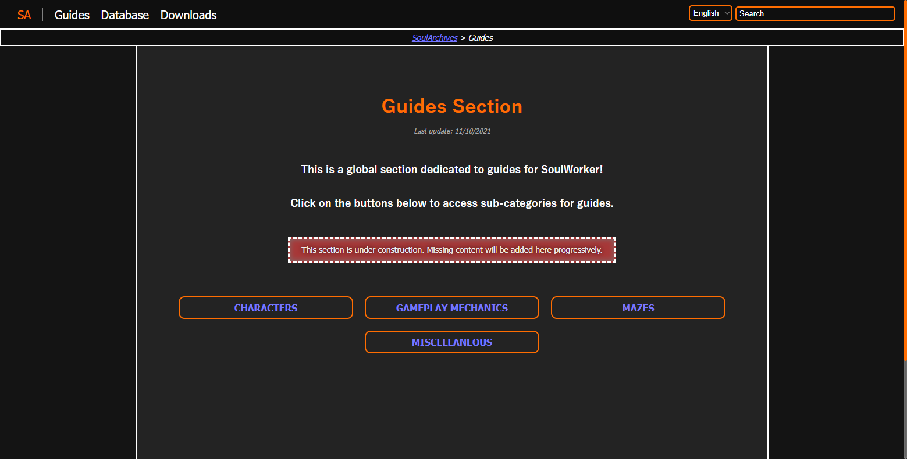
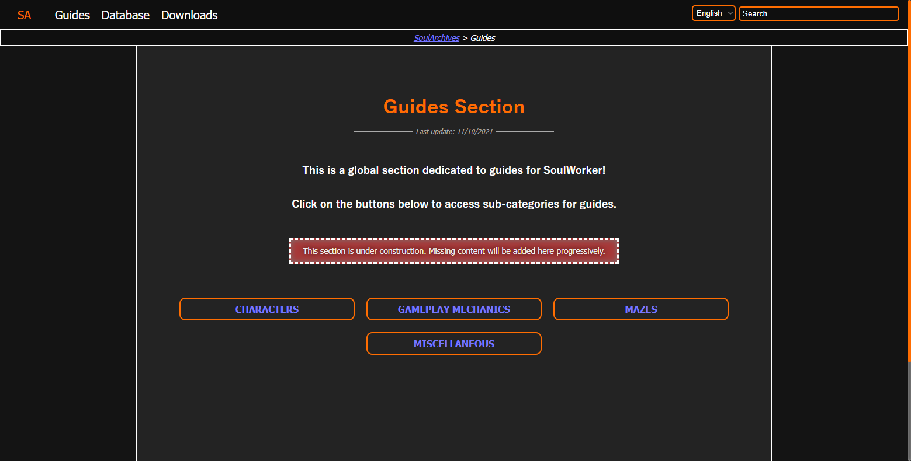

Projet Personnel n°1
Nom : SoulArchives
Description du projet :SoulArchives est une application web orientée guides et conseils pour les joueurs du jeu SoulWorker. Le site contient également des listes de données type base de données d'items et lootboxes pour ceux recherchant des détails sur un objet spécifique du jeu.
Contexte de Réalisation : SoulWorker est un MMO-ARPG présentant
la particularité de ne posséder que peu de ressources accessibles sur
le web concernant les guides et autres ressources exploitables du
genre. De plus, pour le peu de ressources existantes, la plupart sont
obsolètes (non mises à jour) voire entièrement ou partiellement
fausses.
SoulArchives vient tenter de répondre à ces besoins en
proposant guides, listes, conseils et autres ressources, à la libre
disposition des utilisateurs recherchant ce type de contenu.
Étant à l'origine une feuille Google Sheets, le projet a dû évoluer en
application web pour diverses raisons :
- Trop de contenu pour une Google Sheet. Les utilisateurs finissaient par s'y perdre et/ou ne remarquaient pas toujours les autres pages.
- Il est difficile d'y stocker des images, même légères, en grande quantité sur une même page sans causer un chargement long.
-
La Google sheets existe actuellement en 2 langues (français et
anglais) et tend à devenir multilangue en rajoutant des langues
comme le coréen, le japonais, l'allemand, l'italien, l'espagnol,
etc.
Devoir éditer chaque document dans les différentes langues devient fastidieux et très long sans possibilité de centraliser les données et éléments communs. -
Il est très difficile, malgré publication sur le web, de voir une
Google Sheets indexée de sorte à remonter dans les résultats de
recherche sur les moteurs de recherche. De ce fait, il est très
probable que plusieurs joueurs n'aient pas réussi à trouver la
Google Sheet publiée si ces derniers n'ont pas reçu le lien partagé
par moi-même ou d'autres utilisateurs de la Google Sheet.
De plus, le jeu ayant une limite de caractères par message très faible (de l'ordre des 30/40 caractères maximum par message), il est plus facile de partager un lien du style "soularchives.net" plutôt que les liens à rallonge des Google Sheets. - Il est plus facile d'avoir un grand nombre d'utilisateurs simultanés sur une application web hébergée sur un serveur dédié que sur une Google Sheet.
- Des pages trop grandes sur une Google Sheet impacte violemment les performances de ces dernières. De même pour une Google Sheet contenant de très nombreuses pages.
- Certaines mises en page sont difficiles à réaliser sur un tableur et nécessitent plus de liberté, ce qu'une application web permet.
- Certaines fonctionnalités (disponibles et/ou prévues) sont impossibles à réaliser sur une Google Sheet et nécessitent une application web dédiée pour cela.
Dans cette optique, faire évoluer le projet en application web a un réel intérêt autant pour les performances et la capacité d'audiance que pour la maintenance et la possibilité d'implémenter des fonctionnalités diverses.
Version et état du projet : version 1.0.0-a | Le développement de l'interface et des fonctionnalités du projet est actuellement en pause pour un projet de refonte du bloc back-end de l'application.
Mentions Spéciales : le logo de SoulArchives a été réalisé par une artiste indépendante nommée Jiyucy.
Stack Technique : HTML 5 CSS 3 JavaScript Vanilla SCSS PHP 7 Joomla! MySQL
Images d'illustration
 
